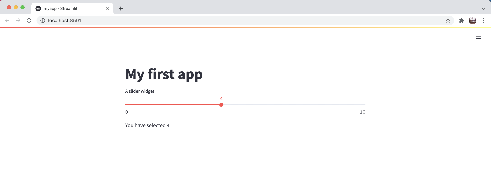

The building blocks of a Streamlit app¶
With NumPy, pandas, and Altair, we usually work with a relatively small number of types of objects.
In NumPy, we usually work with an array,
np.array.In pandas, we usually work with a DataFrame,
pd.DataFrame, or Series,pd.Series.In Altair, we usually work with a Chart,
alt.Chart.
If you have a great understanding of what you can do with those objects, then you have a very solid understanding of NumPy, pandas, and Altair.
In Streamlit, it’s a little different. Instead of studying one or two important Streamlit objects in-depth, we will be more interested in the variety of elements available in Streamlit. In the Streamlit API reference you can see a list of the many types of elements available to us:
The above page is useful, both for browsing to get a sense of what is available in Streamlit, and also for searching for a specific type of element.
Slider widget¶
Consider the following basic Streamlit app:
import streamlit as st
st.title("My first app")
s = st.slider("A slider widget", 0, 10, 4)
st.write(f"You have selected {s}")
This code produces the following app: 
Let’s focus on the line s = st.slider("A slider widget", 0, 10, 4). If you go to the documentation for st.slider it is admittedly a little complicated.
The most important thing to notice is the order of the arguments: label, min_value, max_value, value, step, … Those are the most important (and most easily understandable) for us. Our four inputs to st.slider correspond to setting values for the first four of those arguments. All other arguments, from step and beyond, will receive their default values.
The main point of Streamlit is to enable interactivity. The widget st.slider provides an interactive way for the user to select a number. In our case, we have only provided values for the first four arguments, so step is will use the default value of 1.
Because we have written s = st.slider..., the variable s will have the value of the slider.
When the user changes the slider, the value of s will also change.
In the line st.write(f"You have selected {s}"), we are telling Streamlit to print the given string. By using an f-string, we can easily include the current value of s in the printed text. An equivalent way to do this without f-strings would be st.write(f"You have selected " + str(s)).
Warning
If we re-organized the code so it went
import streamlit as st
st.title("My first app")
st.write(f"You have selected {s}")
s = st.slider("A slider widget", 0, 10, 4)
we would get an error. Explain why.